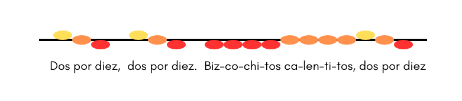
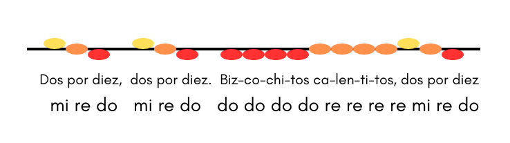
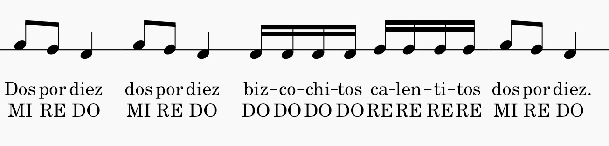

"Dos por diez" *
Escucha esta melodía primero solo con el piano e intenta reconocer la altura de los sonidos que utiliza así como los movimientos.
Prueba cantarla y tocarla en el teclado virtual. Así ubicarás los sonidos utilizados en esta melodía.
Ahora te proponemos representarla gráficamente, con una notación no tradicional, solo tomando en cuenta las diferentes alturas. Usaremos un círculo para cada sonido y, al tener 3 alturas diferentes, ubicaremos el más agudo más arriba y el más grave más abajo. También usaremos colores diferentes para identificarlas. Nos quedaría de la siguiente manera:
Escuchemos el siguiente audio con la letra de la canción.
(audio con el texto de la canción)

Vemos en la representación gráfica que tenemos las 3 alturas indicadas en diferentes lugares y con diferentes colores. El círculo más arriba (más agudo) de color amarillo, corresponde a la nota llamada MI, el que está en el medio de color naranja es la nota RE y el más grave en esta melodía, de color rojo, representa la nota DO. En la siguiente imagen agregamos el nombre de las notas.
(audio con el nombre de las notas)

Escuchemos ahora la canción con la referencia del pulso, para reconocer el ritmo y escribirlo, incorporando así parte de la notación tradicional. (ver recurso de figuras musicales)
A continuación vemos cómo queda el ritmo pautado de esta canción, con las figuras musicales correspondientes y el nombre de las notas musicales debajo.
